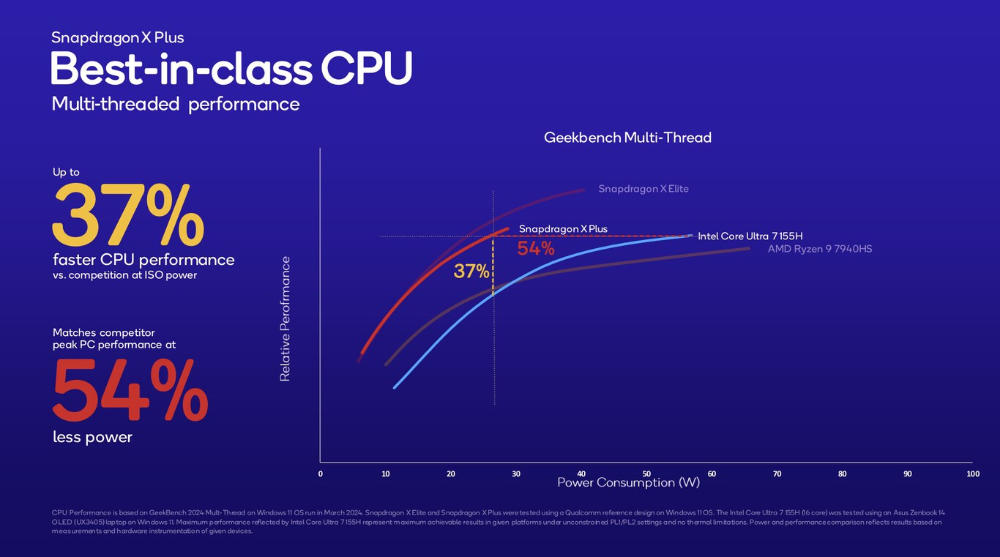

El Snapdragon X Plus es la versión "lite" del X Elite para portátiles, pero no en IA: ahí la apuesta es igual de fuerte.

¡La nueva propuesta de Qualcomm ha llegado para desafiar el dominio establecido! Con su flamante Snapdragon X Plus, la compañía no solo presenta una alternativa digna a los buques insignia de la competencia, sino que también avanza hacia un futuro donde la inteligencia artificial se integra de manera más profunda en nuestros dispositivos. ¿Qué hace tan especial a este nuevo SoC? Para empezar, su rendimiento promete ser una verdadera maravilla. Se dice que es equiparable e incluso supera a los famosos M3 de Apple en ciertos escenarios. Pero, ¿qué hay detrás de este potencial deslumbrante? Bueno, la clave está en su corazón tecnológico: la NPU Qualcomm Hexagon. Esta maravilla de la ingeniería no solo es la más potente para ordenadores portátiles, sino que también alardea de un rendimiento de 45 TOPS. ¿Qué significa eso? Significa que puede ejecutar modelos de IA generativa en local sin tener que depender de la nube, abriendo un abanico de posibilidades fascinantes. Hablemos de números, ¿te parece? La GPU Adreno del Snapdragon X Plus es capaz de ofrecer 3,8 TFLOPs de rendimiento, lo que la pone en el mismo terreno que una Xbox Series S. ¡Impresionante, ¿verdad?! Y eso no es todo, esta potente gráfica puede manejar hasta tres pantallas 4K externas simultáneamente, llevando la experiencia visual a un nivel completamente nuevo. Pero no nos detengamos ahí. La CPU Qualcomm Oryon, con sus 10 núcleos y una frecuencia de reloj que alcanza los 3,4 GHz, asegura un rendimiento veloz y fluido en cualquier tarea que le eches. Aunque es cierto que hay recortes respecto a su hermano mayor, el Snapdragon X Elite, el cual presume de 12 núcleos y una velocidad aún mayor, el X Plus no se queda atrás en cuanto a potencia y versatilidad.
Y qué decir de su conectividad: 5G, Wi-Fi 7, Bluetooth 5.4... todo lo que necesitas para mantenerte conectado en todo momento y en cualquier lugar. Además, con soporte de codificación y decodificación AV1, y la tecnología Snapdragon Sound, la experiencia multimedia alcanza cotas de excelencia que te sumergen completamente en lo que estás haciendo, ya sea creando música en Audacity, codificando en Visual Studio Code, o transmitiendo en OBS Studio.
¿Cuándo podremos disfrutar de esta maravilla tecnológica? Los rumores apuntan a mediados de 2024, cuando los primeros portátiles equipados con el Snapdragon X Plus salgan al mercado. Será entonces cuando podamos ver realmente el potencial de este chip y cómo redefine el estándar en el mundo de la computación portátil. ¡El futuro nunca ha sido tan emocionante!